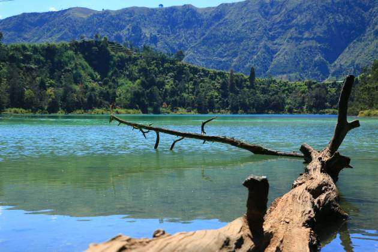

3D2N Dieng Explorer – Sunrise Ganda & Hidden Gems
Harga mulai dari Rp1.700.000/pax
Cocok untuk kamu yang ingin merasakan Dieng secara utuh. Sunrise ganda di Bukit Sikunir & Sikapuk, suasana malam yang tenang, serta destinasi-destinasi tersembunyi yang tidak sempat dikunjungi dalam trip singkat. Waktu 3 hari memungkinkan fleksibilitas dan kenyamanan. Ideal untuk kamu yang suka eksplor, healing, dan pengalaman tak terlupakan.
Fasilitas
- Transportasi full AC (PP Wonosobo – Dieng – explore lokal)
- Akomodasi 2 malam (homestay atau villa)
- Makan 5x (siang, malam, pagi)
- Tiket masuk semua destinasi
- Sunrise trip ke Sikunir & Sikapuk
- Dokumentasi standar (bisa upgrade ke pro)
- Air mineral, snack, dan guide lokal
Destinasi
- Telaga Warna & Batu Ratapan Angin
- Candi Arjuna & Kawah Sikidang
- Dieng Plateau Theater & Museum Kailasa
- Bukit Sikunir & Telaga Cebong (sunrise)
- Bukit Sikapuk (sunrise ke-2)
- Air Terjun Sikarim & Kebun Teh
- Skyline View & Bukit Scooter
- Telaga Menjer & Telaga Dringo
- Hidden spot: Savana Pangonan
FAQ
Apakah bisa custom itinerary?
Tentu bisa. Silakan request ke admin sebelum hari H.
Ada opsi upgrade penginapan?
Ya, tersedia pilihan villa atau hotel dengan tambahan biaya.
Trip ini cocok untuk siapa?
Sangat cocok untuk pasangan, keluarga, komunitas kecil, atau solo traveler yang ingin pengalaman lengkap.